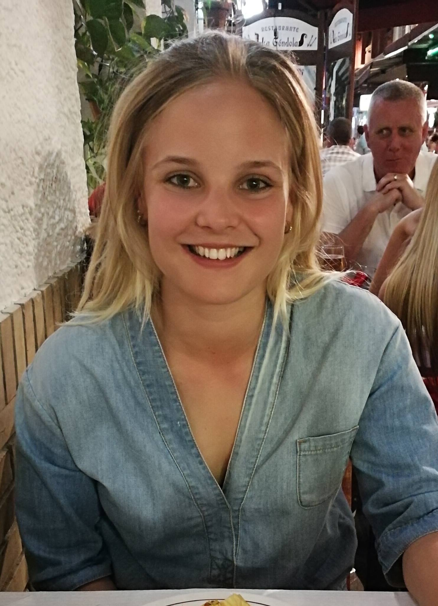

Mit navn er Anne Meinertz, og jeg er 22 år. Jeg kommer oprindeligt fra en lille by i midtjylland, der hedder Ikast, men flyttede i maj til Århus sammen med min kæreste. Før det læste jeg på Handelsskolen i Ikast fra år 2012-2015, på linjen marketing og innovation. Samtidig med det brugte jeg rigtig meget tid på, at træne og arbejde på Shell.
Efter tre år på HHX besluttede jeg mig for, at holde et sabbatår, hvor jeg skulle arbejde, så jeg kunne tjene en masse penge til flytning. Det første år arbejdede jeg, som fuldtidstjener på Jensens Bøfhus i Herning. Her lærte jeg en masse nye mennesker at kende, og det modne mig meget iforhold til min generthed. Her kom jeg TOTAL ud af min comfortzone, og lærte hurtigt at blive meget åben.
Efter mit sabbatår, hvor planen egentligt var, at jeg skulle videre med studiet valgte jeg et sabbatår mere. Her gik 4 månderne med en rejse rundt i Sydamerika med min kæreste. Herefter stod den på lidt arbejde inden studiestart. Jeg havde i min to sabbattår søgt om information omkring udannelsen b.la. via en bekendt, der har sit eget reklamebereau. Jeg har altid fandt det interessant, at sidde at lave collage, folders m.m. og er blevet grebet med tanken, om b.la. at skulle designe hjemmesider og kataloger. Iforhold til kodning har jeg INGEN erfaring overhovedet! Men jeg synes, at alt det vi har lavet i de forskellige fag er enormt interessante!
